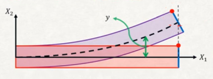

Materyel Mekaniği - 6
Alttaki gibi bir kiriş düşünelim,

Daha önce bu tür bir kiriş üzerinde eksenel yöndeki kuvvetler ve yer değişimlerinin ilişkisini
$$ \left[\begin{array}{c} f'{1x} \\ f'{2x} \end{array}\right] = \frac{AE}{L} \left[\begin{array}{cc} 1 & -1 \\ -1 & 1 \end{array}\right] \left[\begin{array}{c} u'_1 \\ u'_2 \end{array}\right] $$
olarak göstermiştik. Üstte yazılan kirişin yerel, kendisine has kordinat sistemini baz alıyor. Eğer üstteki değişkenleri global kordinat sistemine eşlemek, yansıtmak istiyorsak o zaman sistemi görülen $\theta$ kadar döndürmemiz gerekiyor. Döndürme işlemi genel olarak iki boyuttaki bir $[u, v]$ vektörü için [1, sf. 85]
$$ \left[\begin{array}{c} u' \\ v' \end{array}\right] = \left[\begin{array}{cc} C & S \\ -S & C \end{array}\right] \left[\begin{array}{c} u \\ v \end{array}\right] $$
ile yapılır, ki $C = \cos\theta$, $S = \sin\theta$.
Fakat unutmayalım tek eksenlikten çıktığımız zaman kirişın her ucunda iki serbestlik derecesi vardır, her uç $u,v$ yönünde yer değişim yaşayabilir, bunları $u_1,v_1$ ve $u_2,v_2$ diye gösterebiliriz. O zaman $u'_1,u'_2$ ile dönüş hesabı
$$ \left[\begin{array}{c} u'_1 \\ u'_2 \end{array}\right] = \left[\begin{array}{cccc} C & S & 0 & 0 \\ 0 & 0 & C & S \end{array}\right] \left[\begin{array}{c} u_1 \\ v_1 \\ u_2 \\ v_2 \end{array}\right] $$
[devam edecek]
Kaynaklar
[1] Logan, A First Course in the Finite Element Method
Yukarı